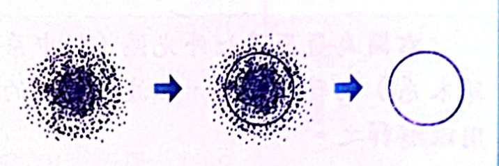
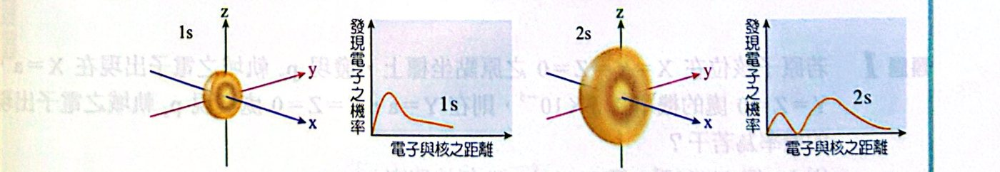
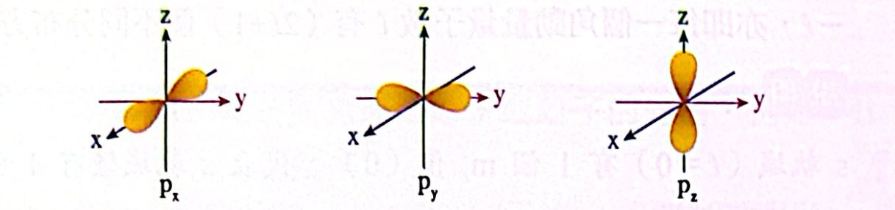
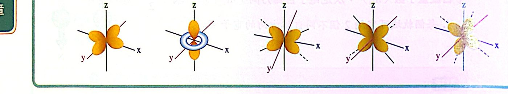

重點整理
一、原子軌域
1. 波耳模型的缺點
- 只能解釋單電子原子或離子（H、He+、Li2+）的光譜，無法解釋多電子原子。
- 電子其實不是沿著固定軌道繞核做圓周運動。
2. 量子力學的原子模型
電子在原子核附近空間快速運動，運動軌跡無法預測，但能預測電子在空間中某一點出現的機率。
- 軌域：原子核附近電子出現機率較大的區域（通常取含電子雲 90% 機率的區域）。電子雲愈濃密，電子出現機率愈大。

電子雲 → 以 90% 機率的邊界表示軌域
3. 四個量子數
① 主量子數 n：描述軌域的大小與能量。n ＝ 1, 2, 3, 4… 代表主殼層 K、L、M、N…；n 愈大，軌域範圍愈大、能量愈高。
② 角（動量）量子數 ℓ：描述軌域的形狀。每個 n 有 n 個 ℓ 值：ℓ ＝ 0, 1, 2, …, (n−1)，代表副殼層。
| ℓ |
0 |
1 |
2 |
3 |
4 |
| 軌域名稱 |
s |
p |
d |
f |
g |
| 形狀 |
球形 |
啞鈴形 |
雙啞鈴形 |
|
|
例：n ＝ 3 時 ℓ ＝ 0, 1, 2 → 有 3s、3p、3d 三種副殼層。
③ 磁量子數 mℓ：描述軌域在空間的方位與數目。每個 ℓ 有 (2ℓ＋1) 個 mℓ：＋ℓ, …, 0, …, −ℓ。
- s（ℓ＝0）：1 個軌域；p（ℓ＝1）：3 個；d（ℓ＝2）：5 個；f（ℓ＝3）：7 個。
④ 自旋量子數 ms：電子自轉方向，ms ＝ ＋1/2 或 −1/2 ⇒ 每個軌域最多容納 2 個自旋相反的電子。
4. 原子軌域的形狀
(1) s 軌域（n ≥ 1 每層 1 個）
- 球形，無方向性：同一半徑的球面上電子出現機率相等。
- n 愈大，ns 軌域半徑愈大、能量愈高：1s ＜ 2s ＜ 3s。2s 電子出現機率最大處比 1s 離核更遠。

1s 與 2s 軌域及電子出現機率分布
(2) p 軌域（n ≥ 2 每層 3 個）
- 電子雲分布在 x、y、z 三個互相垂直的軸上，啞鈴形：px、py、pz。
- 同一主層三個 p 軌域能量相等：npx ＝ npy ＝ npz。
- n 愈大能量愈高：2p ＜ 3p ＜ 4p。
- 有方向性：例如在 yz 平面上找到 px 電子的機率為 0。

px、py、pz 軌域
(3) d 軌域（n ≥ 3 每層 5 個）：有方向性，多為雙啞鈴形。

五個 d 軌域
二、原子能階
1. 單電子（H、He+、Li2+）
- 能階只由 n 決定，n 愈大能階愈高。
- 同一主層的各副層能量相同：ns ＝ np ＝ nd ＝ nf。
氫原子：1s ＜ 2s ＝ 2p ＜ 3s ＝ 3p ＝ 3d ＜ 4s ＝ 4p ＝ 4d ＝ 4f ＜ …
2. 多電子原子
- 能階由 (n＋ℓ) 決定：(n＋ℓ) 愈大能階愈高；(n＋ℓ) 相同時，n 愈大能階愈高。
多電子原子：1s ＜ 2s ＜ 2p ＜ 3s ＜ 3p ＜ 4s ＜ 3d ＜ 4p ＜ 5s ＜ …
例：3p（3＋1＝4）、3d（3＋2＝5）、4s（4＋0＝4，n 較大）⇒ 3p ＜ 4s ＜ 3d。
- 同一主層 n2 個軌域能量不盡相同：n＝3 時 3s ＜ 3p ＜ 3d（但 3 個 3p 彼此能量相同、5 個 3d 彼此能量相同）。
例題與類題
看答案與詳解收起
答(C)(F)
解
- (A) ✗ 同一主層的 3 個 p 軌域能量相同。
- (B) ✗ n＝2 只有 ℓ＝0、1，沒有 2d。
- (C) ○ ℓ＝3 是 f，有 7 個軌域，最多 14 個電子。
- (D) ✗ n＝4、ℓ＝3 是 4f。
- (E) ✗ s 軌域是球形，沒有方向性。
- (F) ○
看答案與詳解收起
答(A)
解px 軌域的電子雲沿 x 軸分布，在 yz 平面（x＝0）上出現機率為 0。
Y＝a、X＝Z＝0 這個點在 y 軸上（屬於 yz 平面），所以機率 ＝ 0。
看答案與詳解收起
答(A)(E)
解ℓ 必須小於 n：
- 3f：n＝3 時 ℓ 最大 2（d），沒有 f ✗
- 2d：n＝2 時 ℓ 最大 1（p），沒有 d ✗
- 3d、2p、8s 都存在。
看答案與詳解收起
答(A)(E)
解氫：只看 n；氮（多電子）：看 n＋ℓ。
- (A) 3p ＞ 2p：氫 3＞2 ✓；氮 4＞3 ✓
- (B) 3d ＞ 4s：氫 3＜4 ✗
- (C) 3d ＝ 3p：只有氫成立 ✗
- (D) 3s ＜ 3p：氫兩者相等 ✗
- (E) 3d ＜ 4p：氫 3＜4 ✓；氮 5＜5 同，n 大者高，4p 較高 ✓
看答案與詳解收起
答(B)(E)
解放光 ＝ 由高能階跳到低能階。鈹是多電子原子，用 n＋ℓ 判斷：
- I：2s(2) → 2p(3) 升高，吸收
- II：2p(3) → 1s(1) 降低，放光 ✓
- III：1s → 3p(4) 吸收
- IV：3p(4) → 4f(7) 吸收
- V：4f(7) → 4p(5) 降低，放光 ✓
單元練習
看答案與詳解收起
答(D)
解f 軌域（ℓ＝3）要 n ≥ 4 才出現，(D) 說 n ≥ 3 錯誤。其餘正確。
看答案與詳解收起
答(D)
看答案與詳解收起
答(B)
解3p：n＝3、ℓ＝1，mℓ 可為 −1、0、＋1 ⇒ (B)(3, 1, 1)。
(A) 是 3s；(C)(D) 是 3d；(E) 是 4f。
看答案與詳解收起
答(C)
解(2, 2, 2, −1/2)：ℓ 必須小於 n，n＝2 時 ℓ 最大為 1，不可能是 2。
看答案與詳解收起
答(D)
解量子力學中電子的運動軌跡無法預測，「球形」是指電子出現機率的分布（電子雲）形狀，不是運動軌跡。
看答案與詳解收起
答(C)
解n＝4：4s、4p、4d、4f 共 16 個軌域、最多 32 個電子。
f 有 7 個軌域，最多 14 個電子，(C) 說 12 錯誤。
看答案與詳解收起
答(B)
看答案與詳解收起
答(C)
解s 軌域為球形對稱，與原子核等距離的各點機率相同，(a,0,0) 與 (0,a,0) 到原點距離都是 a ⇒ 機率同為 1.0×10-6。
看答案與詳解收起
答(E)
解
- (A) ✗ 每個 n 有 n2 個軌域。
- (B) ✗ 2s、5s 都是球形，而且每層都只有 1 個 s 軌域，差別在大小（半徑），不是個數。
- (C) ✗ 3d 的「3」是主量子數 n＝3。
- (D) ✗ n＝1 沒有 p 軌域（n ≥ 2 才有）。
- (E) ○ px 在 yz 平面出現機率為 0。
看答案與詳解收起
答(1) E＞B＞A＞D＞C (2) E＞D＞B＞A＞C (3) n＝6
解(1) 單電子：只看 n。E：n＋1、B：n、A：n−1、D：n−2、C：n−3 ⇒ E＞B＞A＞D＞C
(2) 多電子：看 n＋ℓ
- A (n−1)p：n−1＋1 ＝ n
- B ns：n
- C (n−3)d：n−3＋2 ＝ n−1
- D (n−2)f：n−2＋3 ＝ n＋1
- E (n＋1)s：n＋1
n＋ℓ 相同時 n 大者較高：E（主層 n＋1）＞ D（n−2）；B（n）＞ A（n−1）
⇒ E＞D＞B＞A＞C
(3) 要存在：(n−3)d 需 n−3 ≥ 3 → n ≥ 6；(n−2)f 需 n−2 ≥ 4 → n ≥ 6 ⇒ 最小 n＝6
看答案與詳解收起
答(A)(D)
解氫只看 n；碳看 n＋ℓ（相同時 n 大者高）。
- (A) 5s＞4p：氫 ✓；碳 5 vs 5，5s 的 n 較大 ✓
- (B) 5p＞4f：碳 6 vs 7，5p 較低 ✗
- (C) 4s＞3d：碳 4 vs 5 ✗
- (D) 5p＞4d：氫 ✓；碳 6 vs 6，5p 的 n 較大 ✓
- (E) 5d＞6s：氫 5＜6 ✗
看答案與詳解收起
答(B)(D)
解兩者都要「升高」才需吸收能量：
- (A) 2s→2p：氫能量相等，不需吸收 ✗
- (B) 2p→3d：氫 2→3 ✓；氧 3→5 ✓
- (C) 3d→4s：氧 5→4 是降低 ✗
- (D) 4s→5p：氫 4→5 ✓；氧 4→6 ✓
- (E) 5p→5s：氫相等；氧降低 ✗
看答案與詳解收起
答(B)
解釋放能量 ＝ 能階降低（氧用 n＋ℓ）：
- (A) 6s(6)→4f(7) 升高
- (B) 6p(7)→5d(7)：n＋ℓ 相同，6p 的 n 較大較高 ⇒ 降低，放出能量 ✓
- (C) 4s(4)→3d(5) 升高
- (D) 4d(6)→5p(6)：5p 的 n 較大較高 ⇒ 升高
看答案與詳解收起
答(A)
解氫只看 n：頻率 ∝ (1/nL2 − 1/nH2)
- (A) 2→1：3/4（最大）
- (B) 4→2：3/16
- (C) 5→3：16/225 ≈ 0.07
- (D) 6→3：1/12 ≈ 0.08
看答案與詳解收起
答(C)
解氫原子能量只與 n 有關：5p（n＝5）→ 3d（n＝3）之間只有 n＝5、4、3 三個能階。
可能的躍遷：5→4、5→3、4→3 ⇒ 最多 3 條。
看答案與詳解收起
答(A)
解氮是多電子原子，3d 到 5p 之間的能階依序：3d ＜ 4p ＜ 5s ＜ 4d ＜ 5p，共 5 個不同能階。
任兩能階間都可能躍遷：C(5,2) ＝ 10 條。
看答案與詳解收起
答(A)
解氫原子 3s 與 3p 能量相等（只看 n），(A) 錯誤。
(B) ○（都是球形）(C) ○（2×42＝32）(D) ○
看答案與詳解收起
答(A)(D)
解
- (A) ○ 同族往下，價電子主層 n 變大，半徑變大。
- (B) ✗ 對氫（單電子）而言同一 n 的各軌域能量相同，此敘述不是普遍成立。
- (C) ✗ 3p 的「3」是主量子數，不是三個方向。
- (D) ○ 同一副層的 3 個 3p 軌域能量相同。
- (E) ✗ 球形是電子出現機率分布，不是運動軌跡。